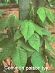

Western poison oak (Toxicodendron diversilobum)
Considered the poison oak by some botanists, this plants is common on the Pacific Coast (except for the Olympic Peninsula) from southern British Columbia to northern Baja California. Its three leaflets seem randomly lobed and resemble oak leaves. Most often found as a spreading, freestanding shrub two to six feet tall, Western poison oak can also take the form of a tall, climbing vine.
Eastern poison oak (Toxicodendron toxicarium; also T. quercifolium)
Unlike poison ivy, this low shrub never climbs or produces aerial rootlets. It grows in poor, sandy soils such as those of oak-pine savannas in the Atlantic and Gulf coastal plains and in scrub oak forests in Arkansas and Missouri. The plant's three leaflets are distinctly roundlobed and resemble the leaves of the common, nontoxic white oak tree. Eastern poison oak berries are white and are borne in clusters.
Poison sumac (Toxicodendron vernix)
This tall shrub prefers low, damp, swampy places and may grow to 15 feet. Like its nonpoisonous sumac cousins, it has compound leaves with multiple leaflets, but there the similarities end. Poison sumac leaves generally have seven to 13 smooth-edged leaflets; nonpoisonous sumac leaves have 11 to 31 toothed leaflets. Poison sumac yields pale-yellow or cream-colored berries that hang in drooping bunches; nonpoisonous species produce upright, conical clusters of red fruit in typical "staghorn" fashion. Poison sumac is closely related to the Asiatic lacquer tree, and it is sometimes known as "poison dogwood."
Common poison ivy (Toxicodendron radicans)
Poison ivy is found throughout the U.S., except for some desert areas, as well as much of Canada and Mexico. It can be a shrub, ground cover or woody vine covered with hairy aerial rootlets. Generally, in Eastern states the plant's three leaflets are smooth-edged, while varieties in Central and Southeastern regions have notched or toothed leaflets. Some Western varieties have a distinct lobe or "thumb" on one or both sides of each leaflet. In spring, young leaves often appear glossy and reddish but then turn dull green. Emergence of foliage is followed by greenish white to pale yellow flowers that later yield clusters of small, yellowish-to-white berries.
|
|
 |
|